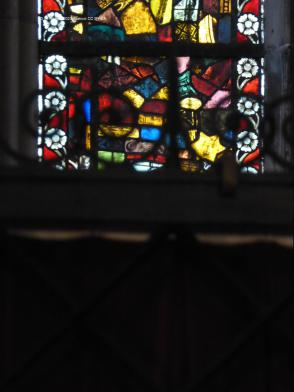

baie saint-laurent-4 : Scènes de l'Ancien et du Nouveau Testament (CV2007, p. 54)
- : Vue d'ensemble (CV2007, p. 54).
 : Vue d'ensemble (sauf rangée inférieure) (CV2007, p. 54).
: Vue d'ensemble (sauf rangée inférieure) (CV2007, p. 54).- : Vue d'ensemble (sauf rangée inférieure) (CV2007, p. 54).
 : Vue d'ensemble (sauf rangée inférieure) (CV2007, p. 54).
: Vue d'ensemble (sauf rangée inférieure) (CV2007, p. 54).- : Partie supérieure.
- : Partie supérieure.
- : Partie supérieure.
 : Rangées 5 et 6.
: Rangées 5 et 6.- : Rangées 5 et 6.
- : Rangées 3 et 4.
 : Rangées 3 et 4.
: Rangées 3 et 4.- : Rangée 2 au centre.
- : Rangée 2 au centre.
- : Rangées 1 et 2.
- : Détail 6a : l'Ascension (CV2007, p. 61).
 : Détail 6a : l'Ascension (CV2007, p. 61).
: Détail 6a : l'Ascension (CV2007, p. 61). : Détail 6b : la Résurrection (CV2007, p. 64).
: Détail 6b : la Résurrection (CV2007, p. 64).- : Détail 6b : la Résurrection (CV2007, p. 64).
- : Détail 6c : la descente du Saint-Esprit (CV2007, p. 65).
- : Détail 6c : la descente du Saint-Esprit (CV2007, p. 65).
- : Détail 5a : le songe de la nourrice (CV2007, p. 61).
 : Détail 5a : le songe de la nourrice (CV2007, p. 61).
: Détail 5a : le songe de la nourrice (CV2007, p. 61).- : Détail 5b : la Cène (CV2007, p. 63).
 : Détail 5b : la Cène (CV2007, p. 63).
: Détail 5b : la Cène (CV2007, p. 63). : Détail 5c : Moïse sauvé des eaux (CV2007, p. 65).
: Détail 5c : Moïse sauvé des eaux (CV2007, p. 65).- : Détail 5c : Moïse sauvé des eaux (CV2007, p. 65).
- : Détail 4a : l'Adoration des mages (CV2007, p. 60).
- : Détail 4a : l'Adoration des mages (CV2007, p. 60).
- : Détail 4b : le baptême du Christ (CV2007, p. 63).
- : Détail 4b : le baptême du Christ (CV2007, p. 63).
- : Détail 4c : scène sous une tente (CV2007, p. 64).
 : Détail 4c : scène sous une tente (CV2007, p. 64).
: Détail 4c : scène sous une tente (CV2007, p. 64). : Détail 4c : scène sous une tente (CV2007, p. 64).
: Détail 4c : scène sous une tente (CV2007, p. 64). : Détail 3a : moines agenouillés devant un saint moine (saint Dominique ?) (CV2007, p. 60).
: Détail 3a : moines agenouillés devant un saint moine (saint Dominique ?) (CV2007, p. 60). : Détail 3a : moines agenouillés devant un saint moine (saint Dominique ?) (CV2007, p. 60).
: Détail 3a : moines agenouillés devant un saint moine (saint Dominique ?) (CV2007, p. 60).- : Détail 3b : la présentation au Temple (CV2007, p. 62).
- : Détail 3b : la présentation au Temple (CV2007, p. 62).
- : Détail 3c : panneau de débris composites (CV2007, p. 59).
- : Détail 3c : panneau de débris composites (CV2007, p. 59).
- : Détail 2a : panneau de débris composites (CV2007, p. 59).
 : Détail 2a : panneau de débris composites (CV2007, p. 59).
: Détail 2a : panneau de débris composites (CV2007, p. 59).- : Détail 2b : Jessé (CV2007, p. 62).
 : Détail 2b : Jessé (CV2007, p. 62).
: Détail 2b : Jessé (CV2007, p. 62). : Détail 2c : panneau de débris composites (CV2007, p. 59).
: Détail 2c : panneau de débris composites (CV2007, p. 59). : Détail 2c : panneau de débris composites (CV2007, p. 59).
: Détail 2c : panneau de débris composites (CV2007, p. 59).-  : Détail 1a : panneau de débris composites (partiel) (CV2007, p. 59).
 : Détail 1a : panneau de débris composites (CV2007, p. 59).
: Détail 1a : panneau de débris composites (CV2007, p. 59).- : Détail 1b : panneau de débris composites (partiel) (CV2007, p. 59).
 : Détail 1b : panneau de débris composites (CV2007, p. 59).
: Détail 1b : panneau de débris composites (CV2007, p. 59). : Détail 1c : panneau de débris composites (partiel) (CV2007, p. 59).
: Détail 1c : panneau de débris composites (partiel) (CV2007, p. 59).
Copyright D. Roegel, 2023.
{kind=link}
 : Vue d'ensemble (sauf rangée inférieure) (CV2007, p. 54).
: Vue d'ensemble (sauf rangée inférieure) (CV2007, p. 54).{kind=link}
 : Vue d'ensemble (sauf rangée inférieure) (CV2007, p. 54).
: Vue d'ensemble (sauf rangée inférieure) (CV2007, p. 54).{kind=link}
{kind=link}
{kind=link}
 : Rangées 5 et 6.
: Rangées 5 et 6.{kind=link}
{kind=link}
 : Rangées 3 et 4.
: Rangées 3 et 4.{kind=link}
{kind=link}
{kind=link}
{kind=link}
 : Détail 6a : l'Ascension (CV2007, p. 61).
: Détail 6a : l'Ascension (CV2007, p. 61). : Détail 6b : la Résurrection (CV2007, p. 64).
: Détail 6b : la Résurrection (CV2007, p. 64).{kind=link}
{kind=link}
{kind=link}
{kind=link}
 : Détail 5a : le songe de la nourrice (CV2007, p. 61).
: Détail 5a : le songe de la nourrice (CV2007, p. 61).{kind=link}
 : Détail 5b : la Cène (CV2007, p. 63).
: Détail 5b : la Cène (CV2007, p. 63). : Détail 5c : Moïse sauvé des eaux (CV2007, p. 65).
: Détail 5c : Moïse sauvé des eaux (CV2007, p. 65).{kind=link}
{kind=link}
{kind=link}
{kind=link}
{kind=link}
{kind=link}
 : Détail 4c : scène sous une tente (CV2007, p. 64).
: Détail 4c : scène sous une tente (CV2007, p. 64). : Détail 4c : scène sous une tente (CV2007, p. 64).
: Détail 4c : scène sous une tente (CV2007, p. 64). : Détail 3a : moines agenouillés devant un saint moine (saint Dominique ?) (CV2007, p. 60).
: Détail 3a : moines agenouillés devant un saint moine (saint Dominique ?) (CV2007, p. 60). : Détail 3a : moines agenouillés devant un saint moine (saint Dominique ?) (CV2007, p. 60).
: Détail 3a : moines agenouillés devant un saint moine (saint Dominique ?) (CV2007, p. 60).{kind=link}
{kind=link}
{kind=link}
{kind=link}
{kind=link}
 : Détail 2a : panneau de débris composites (CV2007, p. 59).
: Détail 2a : panneau de débris composites (CV2007, p. 59).{kind=link}
 : Détail 2b : Jessé (CV2007, p. 62).
: Détail 2b : Jessé (CV2007, p. 62). : Détail 2c : panneau de débris composites (CV2007, p. 59).
: Détail 2c : panneau de débris composites (CV2007, p. 59). : Détail 2c : panneau de débris composites (CV2007, p. 59).
: Détail 2c : panneau de débris composites (CV2007, p. 59).{kind=link}
 : Détail 1a : panneau de débris composites (CV2007, p. 59).
: Détail 1a : panneau de débris composites (CV2007, p. 59).{kind=link}
 : Détail 1b : panneau de débris composites (CV2007, p. 59).
: Détail 1b : panneau de débris composites (CV2007, p. 59). : Détail 1c : panneau de débris composites (partiel) (CV2007, p. 59).
: Détail 1c : panneau de débris composites (partiel) (CV2007, p. 59).